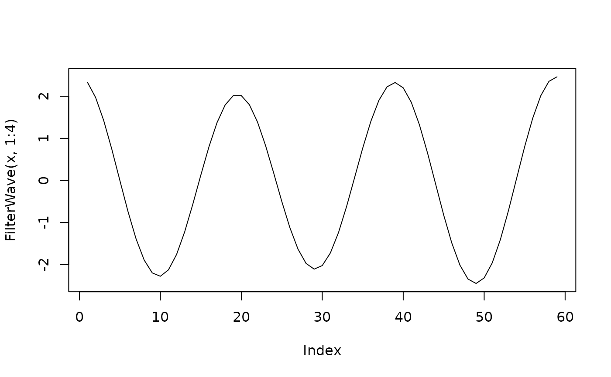
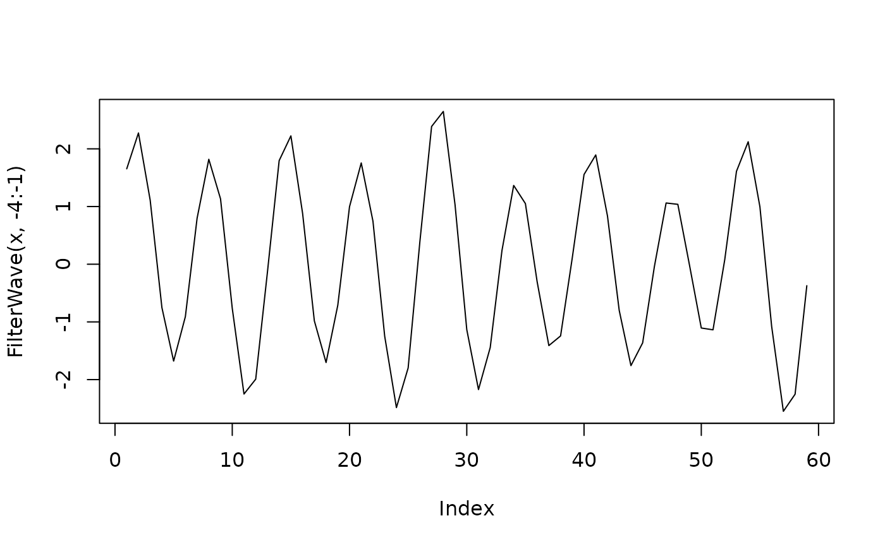
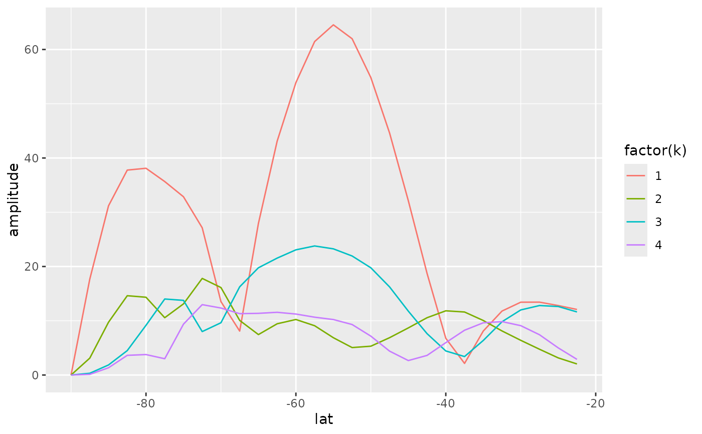

Perform a fourier transform of the data and return the
FitWave(y, k = 1) BuildWave(x, amplitude, phase, k, wave = list(amplitude = amplitude, phase = phase, k = k), sum = TRUE) FilterWave(y, k, action = sign(k[k != 0][1]))
Arguments
| y | numeric vector to transform |
|---|---|
| k | numeric vector of wave numbers |
| x | numeric vector of locations (in radians) |
| amplitude | numeric vector of amplitudes |
| phase | numeric vector of phases |
| wave | optional list output from |
| sum | whether to perform the sum or not (see Details) |
| action | integer to disambiguate action for k = 0 (see Details) |
Value
FitWaves returns a a named list with components
- k
wavenumbers
- amplitude
amplitude of each wavenumber
- phase
phase of each wavenumber in radians
- r2
explained variance of each wavenumber
BuildWave returns a vector of the same length of x with the reconstructed
vector if sum is TRUE or, instead, a list with components
- k
wavenumbers
- x
the vector of locations
- y
the reconstructed signal of each wavenumber
FilterWave returns a vector of the same length as y
`
Details
FitWave uses fft to make a fourier transform of the
data and then returns a list of parameters for each wave number kept.
The amplitude (A), phase (\(\phi\)) and wave number (k) satisfy:
$$y = \sum A cos((x - \phi)k)$$
The phase is calculated so that it lies between 0 and \(2\pi/k\) so it
represents the location (in radians) of the first maximum of each wave number.
For the case of k = 0 (the mean), phase is arbitrarily set to 0.
BuildWave is FitWave's inverse. It reconstructs the original data for
selected wavenumbers. If sum is TRUE (the default) it performs the above
mentioned sum and returns a single vector. If is FALSE, then it returns a list
of k vectors consisting of the reconstructed signal of each wavenumber.
FilterWave filters or removes wavenumbers specified in k. If k is positive,
then the result is the reconstructed signal of y only for wavenumbers
specified in k, if it's negative, is the signal of y minus the wavenumbers
specified in k. The argument action must be be manually set to -1 or +1
if k=0.
See also
Other meteorology functions: Derivate,
EOF, GeostrophicWind,
WaveFlux, thermodynamics
Examples
data(geopotential) library(data.table) # January mean of geopotential height jan <- geopotential[month(date) == 1, .(gh = mean(gh)), by = .(lon, lat)] # Stationary waves for each latitude jan.waves <- jan[, FitWave(gh, 1:4), by = .(lat)] library(ggplot2) ggplot(jan.waves, aes(lat, amplitude, color = factor(k))) + geom_line()# Build field of wavenumber 1 jan[, gh.1 := BuildWave(lon*pi/180, wave = FitWave(gh, 1)), by = .(lat)]#> lon lat gh gh.1 #> 1: 0.0 -22.5 3167.817 11.73417 #> 2: 2.5 -22.5 3166.253 11.84884 #> 3: 5.0 -22.5 3165.204 11.94097 #> 4: 7.5 -22.5 3164.823 12.01036 #> 5: 10.0 -22.5 3165.247 12.05689 #> --- #> 4028: 347.5 -90.0 2701.129 0.00000 #> 4029: 350.0 -90.0 2701.129 0.00000 #> 4030: 352.5 -90.0 2701.129 0.00000 #> 4031: 355.0 -90.0 2701.129 0.00000 #> 4032: 357.5 -90.0 2701.129 0.00000ggplot(WrapCircular(jan), aes(lon, lat)) + geom_contour(aes(z = gh.1, color = ..level..)) + coord_polar()#> Warning: WrapCircular is deprecated, use ggperiodic::wrap instead# Build fields of wavenumber 1 and 2 waves <- jan[, BuildWave(lon*pi/180, wave = FitWave(gh, 1:2), sum = FALSE), by = .(lat)] waves[, lon := x*180/pi]#> lat k x y lon #> 1: -22.5 1 0.00000000 11.73417 0.0 #> 2: -22.5 1 0.04363323 11.84884 2.5 #> 3: -22.5 1 0.08726646 11.94097 5.0 #> 4: -22.5 1 0.13089969 12.01036 7.5 #> 5: -22.5 1 0.17453293 12.05689 10.0 #> --- #> 8060: -90.0 2 6.06501915 0.00000 347.5 #> 8061: -90.0 2 6.10865238 0.00000 350.0 #> 8062: -90.0 2 6.15228561 0.00000 352.5 #> 8063: -90.0 2 6.19591884 0.00000 355.0 #> 8064: -90.0 2 6.23955208 0.00000 357.5ggplot(WrapCircular(waves), aes(lon, lat)) + geom_contour(aes(z = y, color = ..level..)) + facet_wrap(~k) + coord_polar()#> Warning: WrapCircular is deprecated, use ggperiodic::wrap instead# Field with waves 0 to 2 filtered jan[, gh.no12 := gh - BuildWave(lon*pi/180, wave = FitWave(gh, 0:2)), by = .(lat)]#> lon lat gh gh.1 gh.no12 #> 1: 0.0 -22.5 3167.817 11.73417 5.858149 #> 2: 2.5 -22.5 3166.253 11.84884 4.006104 #> 3: 5.0 -22.5 3165.204 11.94097 2.689758 #> 4: 7.5 -22.5 3164.823 12.01036 2.061137 #> 5: 10.0 -22.5 3165.247 12.05689 2.261535 #> --- #> 4028: 347.5 -90.0 2701.129 0.00000 0.000000 #> 4029: 350.0 -90.0 2701.129 0.00000 0.000000 #> 4030: 352.5 -90.0 2701.129 0.00000 0.000000 #> 4031: 355.0 -90.0 2701.129 0.00000 0.000000 #> 4032: 357.5 -90.0 2701.129 0.00000 0.000000ggplot(WrapCircular(jan, wrap = c(0, 360)), aes(lon, lat)) + geom_contour(aes(z = gh.no12, color = ..level..)) + coord_polar()#> Warning: WrapCircular is deprecated, use ggperiodic::wrap instead# Much faster jan[, gh.no12 := FilterWave(gh, -2:0), by = .(lat)]#> lon lat gh gh.1 gh.no12 #> 1: 0.0 -22.5 3167.817 11.73417 5.858149 #> 2: 2.5 -22.5 3166.253 11.84884 4.006104 #> 3: 5.0 -22.5 3165.204 11.94097 2.689758 #> 4: 7.5 -22.5 3164.823 12.01036 2.061137 #> 5: 10.0 -22.5 3165.247 12.05689 2.261535 #> --- #> 4028: 347.5 -90.0 2701.129 0.00000 0.000000 #> 4029: 350.0 -90.0 2701.129 0.00000 0.000000 #> 4030: 352.5 -90.0 2701.129 0.00000 0.000000 #> 4031: 355.0 -90.0 2701.129 0.00000 0.000000 #> 4032: 357.5 -90.0 2701.129 0.00000 0.000000ggplot(WrapCircular(jan), aes(lon, lat)) + geom_contour(aes(z = gh.no12, color = ..level..)) + coord_polar()#> Warning: WrapCircular is deprecated, use ggperiodic::wrap instead# Using positive numbers returns the field jan[, gh.only12 := FilterWave(gh, 2:1), by = .(lat)]#> lon lat gh gh.1 gh.no12 gh.only12 #> 1: 0.0 -22.5 3167.817 11.73417 5.858149 11.17110 #> 2: 2.5 -22.5 3166.253 11.84884 4.006104 11.45865 #> 3: 5.0 -22.5 3165.204 11.94097 2.689758 11.72661 #> 4: 7.5 -22.5 3164.823 12.01036 2.061137 11.97348 #> 5: 10.0 -22.5 3165.247 12.05689 2.261535 12.19776 #> --- #> 4028: 347.5 -90.0 2701.129 0.00000 0.000000 0.00000 #> 4029: 350.0 -90.0 2701.129 0.00000 0.000000 0.00000 #> 4030: 352.5 -90.0 2701.129 0.00000 0.000000 0.00000 #> 4031: 355.0 -90.0 2701.129 0.00000 0.000000 0.00000 #> 4032: 357.5 -90.0 2701.129 0.00000 0.000000 0.00000ggplot(WrapCircular(jan), aes(lon, lat)) + geom_contour(aes(z = gh.only12, color = ..level..)) + coord_polar()#> Warning: WrapCircular is deprecated, use ggperiodic::wrap instead